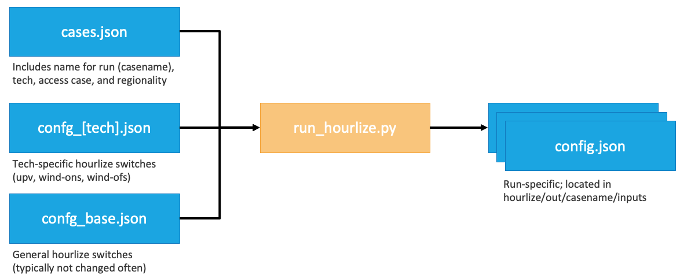

User guide
Temporal resolution
Temporal resolution switches
GSw_HourlyNumClustersspecifies the maximum number of representative periods.Two other switches,
GSw_HourlyPeakLevelandGSw_HourlyMinRElevel, indicate additional “outlying periods” that can be added (peak-load-containing periods forGSw_HourlyPeakLevel, minimum-average-PV-CF and minimum-average-wind-CF periods forGSw_HourlyMinRElevel). If running the US and both are set to “interconnect”, they add the 3 peak-load days, 3 minimum-wind days, and 3 minimum-PV days by interconnect, resulting in 33+9=42 by default ifGSw_HourlyNumClusters=33. These “outlying periods” are only included when using capacity credit (GSw_PRM_CapCredit=1) instead of stress periods (GSw_PRM_CapCredit=0).When using
GSw_HourlyClusterAlgorithm=optimized(the default), then depending on the setting ofGSw_HourlyClusterRegionLevelthere will be a maximum number of days it needs to reproduce the distribution of load/pv/wind. WhenGSw_HourlyClusterRegionLevel=transreg(the default), there are 11 regions and 3 features, so it needs ~33 days to reproduce the distribution (like an eigenvalue problem).So turning up
GSw_HourlyNumClusterson its own won’t increase the temporal coverage. If you want more temporal coverage, the options are:Switch to
GSw_HourlyType=wek, which increases the length of the periods from 1 day to 5 days. If all the other switches are left at their defaults, switching towekwould increase the coverage from 42 days to 5*42=210 days.Reduce
GSw_HourlyClusterRegionLevelto something smaller than transreg (likest), and then increaseGSw_HourlyNumClustersSwitch to
GSw_HourlyClusteAlgorithm=hierarchicaland then increaseGSw_HourlyNumClusters(although that’s less desirable, because hierarchical clustering doesn’t do as good of a job of reproducing the actual spatial distribution of CF and load)Switch to
Gsw_HourlyType=year. Although if you’re running for the whole US you’ll need to turn on region aggregation (GSw_RegionResolution=aggregandGSw_HierarchyFilein [defaultoragg1, oragg2oragg3]) for it to solve.
GSw_HourlyClusterAlgorithmIf set to ‘hierarchical’, then hierarchical clustering is used via
sklearn.cluster.AgglomerativeClustering( n_clusters=int(sw['GSw_HourlyNumClusters']), affinity='euclidean', linkage='ward')
If set to ‘optimized’, then a two-step custom optimization is performed using the
hourly_repperiods.optimize_period_weights()andhourly_repperiods.assign_representative_days()functions to minimize the deviation in regional load and PV/wind CF between the weighted representative periods and the full year.If set to a string containing the substring ‘user’, then instead of optimizing the choice of representative periods for this run, we read them from the inputs/variability/period_szn_user.csv file.
The scenario name is in the first column, labeled ‘scenario’. ReEDS will use rows with the same label as
GSw_HourlyClusterAlgorithm.So if you want to use the example period:szn map, just set
GSw_HourlyClusterAlgorithm=user.If you want to specify a different period:szn map, then add your mapping at the bottom of inputs/variability/period_szn_user.csv with a unique scenario name in the ‘scenario’ column, and set
GSw_HourlyClusterAlgorithmto your unique scenario name, which must contain the substring ‘user’. (For example, I could use a mapping called ‘user_myname_20230130’ by adding my period:szn map to inputs/variability/period_szn_user.csv with ‘user_myname_20230130’ in the ‘scenario’ column and settingGSw_HourlyClusterAlgorithm=user_myname_20230130.)Make sure the settings for
GSw_HourlyTypeandGSw_HourlyWeatherYearsmatch your user-defined map. For example, if your ‘user_myname_20230130’ map includes 365 representative days for weather year 2012, then setGSw_HourlyType=dayandGSw_HourlyWeatherYears=2012.You can feed the period:szn mapping from a completed run into the inputs folder of your repo to force ReEDS to use the same representative or stress periods. More detail can be found here
GSw_PRM_StressThreshold: The default setting of ‘transgrp_10_EUE_sum’ means a threshold of “10 ppm NEUE in each transgrp”, with stress periods selected by the daily sum of EUE within each transgrp.The first argument can be selected from [‘country’, ‘interconnect’, ‘nercr’, ‘transreg’, ‘transgrp’, ‘st’, ‘r’] and specifies the hierarchy level within which to compare RA performance against the threshold.
The second argument can be any float and specifies the RA performance threshold in parts per million [ppm].
The third argument can be ‘NEUE’ or ‘EUE’, specifying which metric to use when selecting stress periods. If set to ‘NEUE’ the model will add stress periods with the largest fraction of dropped load; if set to ‘EUE’ the model will add stress periods with the largest absolute MWh of dropped load.
The fourth argument can be ‘sum’ or ‘max’, specifying whether to add stress periods in order of their daily per-hour max dropped load or by their daily sum of dropped load when selecting stress periods.
If desired you can provide /-delimited entries like ‘transgrp_10_EUE_sum/country_1_EUE_sum’, meaning that each transgrp must have ≤10 ppm NEUE and the country overall must have ≤1 ppm NEUE.
Conventions
Timestamps are formatted as
y{year}d{day of year}h{hour of day}in hour-ending format in Eastern Standard Time. The numbering of days begins at 1. For example, the hour from 3am-4am on January 3, 2012 would be indicated asy2012d003h004.When using representative weks (5-day periods), timestamps are instead formatted as
y{year}w{wek of year}h{hour of wek}. The numbering of weks begins at 1. In this format, the hour from 3am-4am on January 3, 2012 would be indicated asy2012w001h052.
Representative and stress periods (indexed as
sznwithin ReEDS) are labeled similarly to timestamps but without theh{hour of day}component…Except stress periods and stress timeslices have an ‘s’ prefix. So if the time period above showed up as a stress period, it would be labeled as
h=sy2012d003h004andszn=sy2012d003for represntative days (orh=sy2012w001h052andszn=sy2012w001for representative weks). Stress periods are modeled using different loads and transmission capacities than representative periods, so they need to be indexed separately.
Hourly Resolution
The model can be run at hourly resolution using the following switch settings:
GSw_Hourly = 1Turn on hourly resolution
GSw_Canada = 2Turn on hourly resolution for Canadian imports/exports
GSw_AugurCurtailment = 0Turn off the Augur calculation of curtailment
GSw_StorageArbitrageMult = 0Turn off the Augur calculation of storage arbitrage value
GSw_Storage_in_Min = 0Turn off the Augur calculation of storage charging
capcredit_szn_hours = 3The current default hourly representation is 18 representative 5-day weeks. Each representative period is treated as a ‘season’ and is thus active in the planning-reserve margin constraint. In h17 ReEDS we set
capcredit_szn_hours = 10, giving 40 total hours considered for planning reserves (the top 10 hours in each of the 4 quarterly seasons). 18 ‘seasons’ with 10 hours each would give 180 hours, so we switch to 3 hours per ‘season’ (for 54 hours total).
To further reduce solve time, you can make the following changes:
yearset_suffix = fiveyearSolve in 5-year steps
GSw_OpRes = 0Turn off operating reserves
GSw_MinLoading = 0Turn off the sliding-window representation of minimum-generation limits
GSw_PVB = 0Turn off PV-battery hybrids
GSw_calc_powfrac = 0Turn off a post-processing calculation of power flows
Electricity Demand Profiles
Switch options for GSw_EFS1_AllYearLoad
These files are stored in inputs/load/{switch_name}_load_hourly.h5.
Switch Name |
Description of Profile |
Origin |
Weather year included |
|---|---|---|---|
historic |
Detrended historic demand from 2007-2013 and 2016-2023. This is multiplied by annual growth factors from AEO to forecast load growth. |
Produced by the ReEDS team from a compilation of data sources. More detail can be found here and in PR 1601. |
2007-2013 & 2016-2023 |
Clean2035_LTS |
Net-zero emissions, economy wide, by 2050 based on the White House’s Long Term Strategy as shown here: https://www.whitehouse.gov/wp-content/uploads/2021/10/US-Long-Term-Strategy.pdf |
Developed for the 100% Clean Electricity by 2035 study: https://www.nrel.gov/docs/fy22osti/81644.pdf |
2007-2013 |
Clean2035 |
Accelerated Demand Electrification (ADE) profile. This profile was custom made for the 100% Clean Electricity by 2035 study. More information about how it was formed can be found in https://www.nrel.gov/docs/fy22osti/81644.pdf Appendix C. |
Developed for the 100% Clean Electricity by 2035 study: https://www.nrel.gov/docs/fy22osti/81644.pdf |
2007-2013 |
Clean2035clip1pct |
Same as Clean2035 but clips off the top 1% of load hours. |
Developed for the 100% Clean Electricity by 2035 study: https://www.nrel.gov/docs/fy22osti/81644.pdf |
2007-2013 |
EPHIGH |
Features a combination of technology advancements, policy support and consumer enthusiasm that enables transformational change in electrification. |
Developed for the Electrification Futures Study https://www.nrel.gov/docs/fy18osti/71500.pdf. |
2007-2013 |
EPMEDIUMStretch2046 |
An average of the EPMEDIUM profile and the AEO reference trajectory. This was created to very roughly simulate the EV and broader electrification incentives in IRA, before we had better estimates of the actual effects of IRA. |
NREL researchers combined the EPMEDIUM profile and the AEO reference trajectory. |
2007-2013 |
EPMEDIUM |
Features a future with widespread electrification among the “low-hanging fruit” opportunities in electric vehicles, heat pumps and select industrial applications, but one that does not result in transformational change. |
Developed for the Electrification Futures Study https://www.nrel.gov/docs/fy18osti/71500.pdf. |
2007-2013 |
EPREFERENCE |
Features the least incremental change in electrification through 2050, which serves as a baseline of comparison to the other scenarios. |
Developed for the Electrification Futures Study https://www.nrel.gov/docs/fy18osti/71500.pdf. |
2007-2013 |
EER_Baseline_AEO2022_v2023 |
Business as usual load growth. Based on the service demand projections from AEO 2022. This does not include the impacts of the Inflation Reduction Act. |
Purchased from Evolved Energy Research in June 2023 for the National Transmission Planning Study and to update our load profiles in general. More information can be found in EER’s 2022 Annual Decarbonization Report. This is the “Baseline” scenario in EER’s 2022 ADP. |
2007-2013 |
EER_IRAlow_v2023 |
Modeling load change under conservative assumptions about the Inflation Reduction Act |
Purchased from Evolved Energy Research in June 2023 for the National Transmission Planning Study and to update our load profiles in general. This scenario is unfortunately not described in EER’s 2022 ADP. It was originally prepared for the Princeton REPEAT project. Please cite the Princeton REPEAT project when using this profile. |
2007-2013 |
EER_IRAmoderate_v2023 |
Modeling load change under moderate assumptions about the Inflation Reduction Act |
Purchased from Evolved Energy Research in June 2023 for the National Transmission Planning Study and to update our load profiles in general. This scenario is unfortunately not described in EER’s 2022 ADP. It was originally prepared for the Princeton REPEAT project. Please cite the Princeton REPEAT project when using this profile. |
2007-2013 |
EER_100by2050_v2023 |
100% decarbonization by 2050 scenario. This does not explicitly include the impacts of the Inflation Reduction Act. However, due to its decarbonization, it is a more aggressive electrification profile than EER_IRAlow. |
Purchased from Evolved Energy Research in June 2023 for the National Transmission Planning Study and to update our load profiles in general. More information can be found in EER’s 2022 Annual Decarbonization Report. This is the “Central” scenario in EER’s 2022 ADP. |
2007-2013 |
EER_Baseline_AEO2023 |
Business as usual load growth. Based on the service demand projections from AEO 2023. This does not include the impacts of the Inflation Reduction Act. |
Purchased from Evolved Energy Research in 2024. More information can be found in EER’s 2024 Annual Decarbonization Report. This is the “Baseline” scenario in EER’s 2024 ADP. |
2007-2013 & 2016-2023 |
EER_IRAlow |
Modeling load change under conservative assumptions about the Inflation Reduction Act |
Purchased from Evolved Energy Research in 2024. This scenario is not described in EER’s 2024 ADP. It is most similar to the “Current Policy” scenario; however, that scenario has “moderate assumptions about the Inflation Reduction Act” compared to this scenario which has “conservative assumptions about the Inflation Reduction Act”. This scenario was originally prepared for the Princeton REPEAT project. Please cite the Princeton REPEAT project when using this profile. |
2007-2013 & 2016-2023 |
EER_100by2050 |
100% decarbonization by 2050 scenario. This does not explicitly include the impacts of the Inflation Reduction Act. However, due to its decarbonization, it is a more aggressive electrification profile than EER_IRAlow. |
Purchased from Evolved Energy Research in 2024. More information can be found in EER’s 2024 Annual Decarbonization Report. This is the “Central” scenario in EER’s 2024 ADP. |
2007-2013 & 2016-2023 |
Resources for more info about ReEDS’s load profiles
Standard Scenarios 2024 has a appendix that synthesizes what is included in these demand profiles in more detail. See pg 37-45 for more information. Note that this describes the previous batch of EER profiles from June 2023; however, the high level trends will be largely consistent between the previous and current profiles.
ADP 2024’s Technical Documentation lists many of their underlying stock assumptions.
EER’s docs page if you want a deeper look into their modeling.
Different weather years
For EER’s load profiles, “weather” includes everything considered by NREL’s ResStock and ComStock building models (i.e., temperature, humidity, insolation, and wind speed). This information gets translated into variations in load through regressions and benchmarking with historical system load data for the weather year in question.
Demand Response
Demand response is turned off by default. To enable it the following switches are needed:
GSw_DRShed: turns on/off the demand response resourceGSw_MaxDailyCF: turns on/off daily maximum capacity factor constraintdr_shedscen: scenario to define which scalars will be used for the supply curve cost and capacity
Hydrogen inputs
Most hydrogen input files are in the inputs/consume/ folder.
consume_char_[GSw_H2_Inputs].csv
Contains cost and performance assumption for electrolyzers and steam-methane reformer.
Electrolyzer capital cost assumptions are based on the Pathways to Commercial Liftoff: Clean Hydrogen Report (https://liftoff.energy.gov/wp-content/uploads/2023/05/20230320-Liftoff-Clean-H2-vPUB-0329-update.pdf) [see values in the footnotes of Figure 3 on page 14]. The reference scenario assumes linearly decline from 1750 \(/kW in 2022 to 550 \)/kW in 2030, and then remain constant after. The low cost scenario assumes further declines from 2030 to 2050.
Fixed O&M values are assumed to be 5% of CAPEX (source: https://iopscience.iop.org/article/10.1088/1748-9326/acacb5)
Electrolyzer performance (efficiency) as well as SMR cost and performance assumptions are derived from assumptions H2A: Hydrogen Analysis Production Models (https://www.nrel.gov/hydrogen/h2a-production-models.html), with guidance from Paige Jadun. See original input assumptions in the ReEDS-2.0_Input_Processing repo: https://github.nrel.gov/ReEDS/ReEDS-2.0_Input_Processing/blob/main/H2/costs/H2ProductionCosts-20210414.xlsx.
Note that SMR costs are currently in 2018\( and electrolyzer costs are in 2022\).
h2_transport_and_storage_costs.csv
Investment |
Cost type |
Units |
|---|---|---|
Pipelines |
Overnight Capital Cost |
$/[(metric ton/hour)*mile] |
Pipelines |
FOM |
$/[(metric ton/hour)mileyear] |
Pipelines |
Electric load |
MWh/metric ton |
Compressors |
Overnight Capital Cost |
$/(metric ton-hour) |
Compressors |
FOM |
$/[(metric ton/hour)*year) |
Compressors |
Electric load |
MWh/metric ton |
Storage |
Overnight Capital Cost |
$/metric ton |
Storage |
FOM |
$/(metric ton*year) |
Storage |
Electric load |
MWh/metric ton |
The values in H2_transport_and_storage_costs.csv are based on raw data provided from the SERA model by Paige Jadun.
The raw data are formated by the process-h2-inputs.py script in the input processing repository (https://github.nrel.gov/ReEDS/ReEDS-2.0_Input_Processing/blob/main/H2/process-h2-inputs.py).
Intra-Regional Hydrogen Transport Cost
Flat cost for intra-ReEDS BA hydrogen transport and storage in $/kg H2 produced.
Specified via GSw_H2_IntraReg_Transport.
Default value assumes transport via pipelines and is from 2023 DOE Clean Hydrogen Liftoff Report pg 15.
Transport costs could be more expensive if you assume other methods of H2 transport (ex. trucking).
Note: this cost is only assessed for new plants (those that fall in the newv(v) set), not existing H2 producers.
This is because existing hydrogen plants likely have already installed the necessary infrastructure to connect to a hydrogen demand center (likely an industrial plant) and that infrastructure was likely sized appropriately for the consumers needs.
Therefore, that H2 producer shouldn’t pay an additional investment cost for intra-regional hydrogen transport since they will not be transporting hydrogen elsewhere.
However, new hydrogen producing plants, especially in a decarbonized power system or if a large hydrogen economy manifests, might not be physically close to the hydrogen consumers and therefore should pay this cost.
h2_storage_rb.csv
Mapping of ReEDS balancing are to available H2 storage type. Since costs are always ordered (saltcavern < hardrock < above ground), BAs with access to saltcaverns or hardrock storage are only assigned to the cheapest option to reduce the model size.
Retail adder for electrolytic load
One option for the retail adder for electrolytic load (
GSw_RetailAdder) is derived from the difference between the industrial average rate and the ReEDS wholesale cost. The calculation below is done in 2023 dollars:National average energy price paid in 2023 by industrial consumers (via EIA 861, https://www.eia.gov/electricity/data/eia861m/ –> sales and revenue –> download data. This value is the sales weighted average): $80.55/MWh
ReEDS average wholesale cost from 2023 Standard Scenarios Mid-case in model 2026 (since we cannot find quality empirical wholesale prices): $41.78/MWh
Difference between the industrial average rate and the wholesale cost: $39/MWh
Deflated to 2004 dollars: $28/MWh
Note: please be aware that ReEDS’s solutions are very sensitive to this switch.
With GSw_RetailAdder=28, there is very little to no electrolytic hydrogen.
With GSw_RetailAdder=0 and with exogenous H2 demand, you may see nearly all of the exogenous H2 demand profile being met by electrolyzers and/or a large endogenous H2 economy.
Hydrogen Production Tax Credit (45V)
The regulation itself
The hydrogen production tax credit was enacted in the Inflation Reduction Act in 2022. It is commonly referred to as 45V due to the section of the tax code it is in. It provides up to $3 per kg of H2 produced (2022 USD, credit amount is inflation adjusted in subsequent years), based on the lifecycle emissions of hydrogen production as shown in the table below. These lifecycle greenhouse gas emissions only includes emissions only through the point of production (i.e. does not include hydrogen transport or storage).
Since the largest component of the lifecycle emissions of electrolytic hydrogen production is the carbon intensity of the generators powering the electrolyzer, the main point of contention for this regulation has been how to define the carbon intensity of electricity. The Department of the Treasury proposed guidance on December 22, 2023 stating the requirements for demonstrating the CO2 intensity of H2 production and published their final rules on January 3, 2025. This press release has a nice summary.
Life-cycle Emissions (kg CO2-e / kg H2) |
PTC (2022$ / kg H2) |
CO2 intensity of electricity to meet incentive required through electrolysis (tonnes CO2 / MWh) |
|---|---|---|
[4, 2.5] |
0.6 |
[.07, .045] |
(2.5, 1.5] |
0.75 |
(.045, .027] |
(1.5, 0.45] |
1 |
(.027, .007] |
(0.45, 0] |
3 |
(.008, 0] |
To ensure the low carbon intensity of the electricity powering electrolyzers, the hydrogen production tax credit has three “pillars” or core components, as described below:
Incrementality (also referred to as additionality): generators must have a commercial online date no more than three years before a H2 production facility’s placed in service date to qualify. Example: if an electrolyzer is put in service in 2028, only generators whose commercial operations dates are between 2025-2028 may qualify to power this electrolyzer. This requirement starts immediately. There are special exceptions for nuclear, CCS and states with robust GHG emission caps - we do not model these additional pathways in ReEDS.
Hourly matching: each MWh must be consumed by an electrolyzer in the same hour of the year in which it was generated.
Deliverablity: each MWh must be consumed by an electrolyzer in the same region in which it was generated. Regional matching is required at the National Transmission Needs Study region level, as shown in the image below.

Source: Guidelines to Determine Well-to-Gate GHG Emissions of Hydrogen Production Pathways using 45VH2-GREET 2023, 2023, Figure 2
These three pillars are combined differently depending on which year it is:
2024-2029: annual matching, regional matching, additionality required
2030 onwards: hourly matching, regional matching, additionality required
Please see the Department of the Treasury final rules if you want to learn more.
How is this regulated?
There will be a system of trading credits, which are called Energy Attribute Credit (EACs). This is similar to Renewable Energy Credits (RECs). Qualifying clean technologies produce EACs which are tracked by region, vintage (commercial online year), and hour in which they are produced. Electrolyzers must purchase and retire EACs for all MWh used in order to receive the 45V credit.
Which generating technologies qualify to produce Energy Attribute Credits?
The law is technology neutral and does not stipulate which technologies can or cannot produce an EAC, it only specifies the lifecycle emissions of hydrogen production, which is calculated by the GREET Model out of Argonne National Lab. This model considers the carbon intensity of the electricity from various sources. You can reverse calculate the range of CO2 intensity of electricity required to meet the various incentive levels (assuming H2 production via electrolysis). These are the values in the 3rd column of the table above. Based on their low CO2 emissions, qualifying clean technologies could include: wind, solar PV, nuclear, gas with CCS, geothermal and hydropower.
What years does the hydrogen production tax credit apply to?
The hydrogen production tax credit took effect immediately, so in 2023. Projects must begin construction by 2033. The credit can be received for 10 years. Therefore, the latest we would see plants receiving 45V through 2042. If the final regulations include a 4-hr year safe harbor (consistent with other tax credits such as the PTC and ITC), then projects receiving 45V could consutrction as late as by 2037 and receive 45V through 2046.
Intersection with other tax credits and policies
Section 45Y PTC and Section 48E ITC
45V can be stacked with the PTC/ITC. This is because it is two different plants which are claiming the credit. Example: a wind plant could produce a MWh of energy and receive the generation PTC for that energy produced. That energy could power an electrolyzer which could then receive 45V.
Section 45Q - carbon capture and sequestration
The same plant cannot claim both 45Q and 45V. So for example, an SMR-CCS plant cannot claim both 45Q for their carbon capture and 45V for their hydrogen production. They must choose one. We calculated that 45Q will be most valuable for most SMR-CCS plants and therefore assume that they take that in the model.
However, a gas-CCS plant could produce a MWh of energy and receive 45Q for that energy produced. Since they are a relative clean generator per their lifecycle emissions, this energy produces a EAC. So the gas-CCS plant would receive 45Q and the electrolyzer would receive 45V. People frequently confuse this. Only the hydrogen producer receives 45V. Generating technologies are merely creating the Energy Attribute Credit which hydrogen producers need to prove that their electricity is “clean enough”.
RECs
A generating technology can choose to produce a REC or an EAC, but not both.
Implementation in ReEDS
Qualifying clean technologies produce Energy Attribute Credits (EACs, similar to the REC system) which are tracked by region (h2ptcreg), vintage (commercial online year), and hour in which they are produced.
Qualifying clean technologies include: wind, solar PV, nuclear, gas with CCS, geothermal, hydropower
These are defined by the set i_h2_ptc_gen(i) and carried through the model as valcap_h2ptc and valgen_h2ptc
Electrolyzers must purchase and retire EACs for all MWh used in order to receive the 45V credit
This is accomplished via the new variable CREDIT_H2PTC(i,v,r,allh,t)
Pre-2030 those EACs can be generated at any time within the year the H2 is generated; 2030 and later the EACs must be matched hourly
Simplifying assumption used for vintage: generators must have a commercial online date in 2024 or later in order to qualify as an EAC producer
Applied by restricting valcap_h2ptc to have firstyear_v(i,v)>=h2_ptc_firstyear
Assumptions
We only represent technologies which qualify for the less than 0.45 kg CO2e/kg H2 lifecycle emissions category. There may be relatively clean generators that qualify for lower \( amounts of the PTC. However, since the \)3/kg is so lucrative, it is assumed that all H2 producers will comply with the mechanisms required to prove the cleanliness of their electricity.
This PR consists of only grid-connected electrolyzers. We did not include off grid systems due to insufficient evidence of their BOS costs, logistical tractability and more. However, there may be off-grid systems which are cost competitive with grid connected systems.
SMR with CCS could technically receive the H2 PTC. However, our back of the envelope calculations show that SMR w/ CCS plants are more likely to take 45Q so that is why ReEDS currently assumes that only electrolyzers take the H2 PTC.
We force all electrolyzers to take 45V, and therefore we force there to be 45V-credited generation if there is electrolyzer load. Our logic was that for an electrolyzer to be cost competitive with SMR or SMR-CCS, it would need and want to take the $3/kg 45V. This assumption is enforced by the constraints
eq_h2_ptc_region_balanceandeq_h2_ptc_region_hour_balance.
Recommended switches to incorporate the hydrogen production tax credit into a run
Switch |
Value |
Recommend or Required for running with the H2 PTC enabled |
Function |
|---|---|---|---|
GSw_H2_PTC |
1 |
Required |
Turns on and off hydrogen production tax credit |
GSw_H2 |
2 |
Recommended |
Representation of hydrogen supply/demand balance. Sw_H2=1 will not cause the model to fail but it is not recommended for the most accurate representation of the H2 PTC. |
GSw_H2_Demand_Case |
Anything except ‘none’ |
Recommended |
Annual H2 demand profile |
GSw_H2_IntraReg_Transport |
0.32 |
Recommended |
Flat cost for intra-ReEDS BA hydrogen transport and storage in $2004 / kg H2 produced. Note: This is now included as the default representation even if the H2 PTC is not enabled. This is assuming transport via pipelines. Transport costs could be more expensive if you assume other methods of H2 transport (ex. trucking). |
GSw_RetailAdder |
$0/MWh |
Recommended |
2004$/MWh adder to the cost of energy consumed by hydrogen producing facilities and direct air CO2 capture facilities. Included to represent the non-bulk-power-system costs of increasing electrical loads that are not captured within ReEDS. The default value of 0 indicates an assumption that these facilities are large enough to participate directly in wholesale markets. |
Other Notes
The final version of the regulation will not be published until later in FY24, at which point this documentation will be updated to reflect the final regulations.
Fun fact: There is an Investment Tax Credit (ITC) component to 45V. However, all analyses (both ours and from other research groups) indicate that hydrogen producing facilties will choose to take the H2 PTC so in ReEDS we exclusively model the PTC.
Supply curves
Supply curve switches
Supply curve “access” scenarios: these switches are used to toggle across the different supply curve scenarios from reV.
GSw_SitingGeoGSw_SitingUPVGSw_SitingWindOfsGSw_SitingWindOns
For geothermal there are additional switches for toggling between using reV and ATB based supply curves:
geohydrosupplycurveegssupplycurveegsnearfieldsupplycurve
Pumped storage supply curves can also be specified using pshsupplycurve.
The number of cost bins used to represent the reV-based supply curve technologies can be set dynamically by the numbins switches:
numbins_windonsnumbins_windofsnumbins_upvnumbins_cspnumbins_geohydro_allkmnumbins_egs_allkm
In addition, the GSw_ReducedResource switch allows for a uniform reduction of supply curve capacity based on the value of reduced_resource_frac set in inputs/scalars
Other notes
Supply curve files can be found in
inputs/supply_curve, with the corresponding hourly profiles for wind and solar ininputs/variability/multi_yearThe
rev_paths.csvininputs/supply_curveprovides details on the available access case for each technology and the corresponding supply curve vintage.Supply curves for wind, solar, and geothermal are generated by hourlize; for more details see Using Hourlize.
Transmission
Most transmission input files are in the inputs/transmission/ folder.
Input files
cost_hurdle_country.csv: Indicates the hurdle rate for transmission flows between USA/Canada and USA/Mexico.
rev_transmission_basecost.csv: Base transmission costs (before terrain multipliers) used in reV. Sources for numeric values are:
TEPPC: https://www.wecc.org/Administrative/TEPPC_TransCapCostCalculator_E3_2019_Update.xlsx
SCE: http://www.caiso.com/Documents/SCE2019DraftPerUnitCostGuide.xlsx
-
A more recent guide with a working link (as of 20230227) is available at https://cdn.misoenergy.org/Transmission Cost Estimation Guide for MTEP22337433.pdf.
Southeast: Private communication with a representative Southeastern utility
transmission_capacity_future_baseline.csv: Historically installed (since 2010) and currently planned transmission capacity additions.
transmission_capacity_future_{
GSw_TransScen}.csv: Available future routes for transmission capacity as specified byGSw_TransScen.transmission_capacity_init_AC_NARIS2024.csv: Initial AC transmission capacities between 134 US ReEDS zones. Calculated using the code available at https://github.nrel.gov/pbrown/TSC and nodal network data from https://www.nrel.gov/docs/fy21osti/79224.pdf. The method is described by Brown, P.R. et al 2023, “A general method for estimating zonal transmission interface limits from nodal network data”, in prep.
transmission_capacity_init_AC_REFS2009.csv: Initial AC transmission capacities between 134 US ReEDS zones. Calculated for https://www.nrel.gov/analysis/re-futures.html.
transmission_capacity_init_nonAC.csv: Initial DC transmission capacities between 134 US ReEDS zones.
transmission_cost_ac_500kv_ba.csv and transmission_distance_ba.csv: Distance and cost for a representative transmission route between each pair of 134 US ReEDS zones, assuming a 500 kV single-circuit line. Routes are determined by the reV model using a least-cost-path algorithm accounting for terrain and land type multipliers. Costs represent the appropriate base cost from rev_transmission_basecost.csv multiplied by the appropriate terrain and land type multipliers for each 90m pixel crossed by the path. Endpoints are in inputs/shapefiles/transmission_endpoints and represent a point within the largest urban area in each of the 134 ReEDS zones.
transmission_cost_dc_ba.csv: Same as transmission_cost_ac_500kv_ba.csv except assuming a 500 kV bipole DC line.
Relevant switches
GSw_HierarchyFile: Indicate the suffix of the inputs/hierarchy.csv file you wish to use.By default the transreg boundaries are used for operating reserve sharing, capacity credit calculations, and the boundaries for limited-transmission cases.
GSw_TransInvMaxLongTerm: Limit on annual transmission deployment nationwide IN/AFTERfirstyear_trans_longterm, measured in TW-milesGSw_TransInvMaxNearTerm: Limit on annual transmission deployment nationwide BEFOREfirstyear_trans_longterm, measured in TW-milesGSw_TransInvPRMderate: By default, adding 1 MW of transmission capacity between two zones increases the energy transfer capability by 1 MW but the PRM trading capability by only 0.85 MW; here you can adjust that derateGSw_TransCostMult: Applies to interzonal transmission capacity (including AC/DC converters) but not FOM costsGSw_TransSquiggliness: Somewhat similar toGSw_TransCostMult, but scales the distance for each inter-zone interface. So turning it up to 1.3 will increase costs and losses by 1.3, and for the same amount of GW it will increase TWmiles by 1.3.GSw_TransHurdle: Intra-US hurdle rate for interzonal flows, measured in $2004/MWhGSw_TransHurdleLevel: Indicate the level of hierarchy.csv between which to apply the hurdle rate specified byGSw_TransHurdle. i.e. if set to ‘st’, intra-state flows will have no hurdle rates but inter-state flows will have hurdle rates specified byGSw_TransHurdle.GSw_TransRestrict: Indicate the level of hierarchy.csv within which to allow transmission expansion. i.e. if set to ‘st’, no inter-state expansion is allowed.GSw_TransScen: Indicate the inputs/transmission/transmission_capacity_future_{GSw_TransScen}.csv file to use, which includes the list of interfaces that can be expanded. Note that the full list of expandable interfaces is indicated by this file plus transmission_capacity_future_default.csv (currently planned additions) plus transmission_capacity_init_AC_NARIS2024.csv (existing AC interfaces, which can be expanded by default) plus transmission_capacity_init_nonAC.csv (existing DC connections, which can be expanded by default). Applies to AC, LCC, and VSC.GSw_PRM_hierarchy_level: Level of hierarchy.csv within which to calculate net load, used for capacity credit. Larger levels indicate more planning coordination between regions.GSw_PRMTRADE_level: Level of hierarchy.csv within which to allow PRM trading. By default it’s set to ‘country’, indicating no limits. If set to ‘r’, no PRM trading is allowed.
ReEDS2PRAS and PRAS
Some of the behavior of ReEDS2PRAS and PRAS (used for the stress periods resource adequacy method) can be controlled via the following switches:
PRAS sampling
pras_samples(default 100): How many Monte Carlo samples to use in PRASpras_seed(default 1): Random number generator seed to use for PRAS samples; can be any positive integer. If 0 the seed is set randomly.
ReEDS2PRAS unit disaggregation
pras_agg_ogs_lfillgas(default 0): If set to 1, aggregate existing o-g-s and landfill gas units to the capacity assumed for new units (frominputs/plant_characteristics/unitsize_{pras_unitsize_source}.csv). This switch is provided because these two technologies have low total capacity nationwide but many small-capacity (~1 MW) units; aggregating these small individual units can reduce the PRAS problem size without significantly affecting the results.pras_existing_unit_size(default 1): If set to 1, use the average size of existing units by tech/region when disaggregating new capacity. Otherwise, if set to 0, use characteristic capacities frominputs/plant_characteristics/unitsize_{pras_unitsize_source}.csvfor all new units.pras_max_unitsize_prm(default 1): If set to 1, cap the upper bound of disaggregated unit size by zone at the zonal PRM in MWpras_unitsize_source(defaultatb; choices arer2xoratb): Data source for characteristic unit sizes in ReESD2PRASpras_vre_combine(default 0): If set to 1, combine VRE into a single VRE tech in ReEDS2PRAS
ReEDS2PRAS technology representation
pras_hydro_energylim(default 1): Model hydro as energy-limited in PRAS (1) or like a thermal generator (0)pras_include_h2dac(default 0): If set to 1, include demand associated with H2 production & DAC in PRASpras_trans_contingency(default 0): Use n-0 (0) or n-1 (1) transmission capacities in PRAS
If a ReEDS case raises an out-of-memory error in ReEDS2PRAS/PRAS, the memory use can be reduced using some or all of the following settings:
Set
pras_agg_ogs_lfillgasto 1Set
pras_vre_combineto 1Setting
pras_existing_unit_sizeto 0 results in fewer, larger units; the reduction in the number of units reduces the memory use. However, for zones with relatively low load and low interzonal transmission capacity, using larger unit sizes (particularly unit sizes greater than the reserve margin) can increase the level of unserved energy; if a single unit is larger than the planning reserve margin, unserved energy is likely whenever that unit experiences on outage. This approach should therefore be used with caution.
Monte Carlo Sampling (MCS)
This guide explains how to enable, configure, and run Monte Carlo simulations so you can propagate input uncertainty through ReEDS runs.
Quick start
In
cases.csv, setMCS_runsto the number of samples you want. Zero disables MCS.Set
MCS_distto the suffix name of a YAML file that contains the input distribution definitions. For example,defaultwill useinputs/userinput/mcs_distributions_default.yaml.Set
MCS_dist_groupsto one or more YAML group names. Separate multiple groups with a dot. For exampletech.load_st.ng_fuel_price.Run ReEDS as usual. Each Monte Carlo draw will create its own run using the sampled inputs.
These three switches (MCS_runs,MCS_dist, and MCS_dist_groups) are the only required controls.
All other settings live in the YAML file (inputs/userinput/mcs_distributions_{MCS_dist}.yaml).
YAML distribution file format
Distribution groups live in inputs/userinput/mcs_distributions_{MCS_dist}.yaml.
Each group samples one or more switches together.
Group field summary:
Field |
Type |
Values |
Purpose |
|---|---|---|---|
|
string |
any unique id |
Group id used by |
|
list of dicts |
|
Map each switch to candidate values. |
|
string |
|
Pick the sampling distribution. |
|
list of numbers |
depends on |
Parameters for the distribution. |
|
string |
spatial hierarchy level (typically |
Spatial resolution for draws. |
name
Unique id of the group.
The id must appear in
MCS_dist_groupsto activate this group.Switches listed in the same group receive the same random draw, which creates perfect correlation inside the group. To force independence, place switches in different groups.
assignments_list
A list where each item is a one key dictionary.
Key gives the switch name. Value lists the candidate options for that switch, referencing the underlying files or literal values that the sampler can draw from.
Example idea:
[{switch1: [v1, v2]}, {switch2: [v1, v2]}].
dist
dirichletuses a weighted average across options.discreteselects a single option using the given weights.triangular_multiplierdraws a multiplier from a triangular distribution and applies it to all files in theassignments_listgroup.uniform_multiplierdraws a uniform multiplier and applies it likewise.
dist_params
dirichlet:[alpha1, alpha2, ...]concentration values. Length must match the number of options for the switches in the group.discrete:[w1, w2, ...]probability weights, normalized internally. Length must match the number of options.triangular_multiplier:[low, center, high].uniform_multiplier:[low, high].
weight_r
For some files (those with regional data) we support the possibility of applying different weights to different ReEDS hierarchies. This field specifies the hierarchy considered.
Common values are
country,transgrp,st, orba.Support depends on the switch. ATB
plantchar_*switches currently support onlycountry.
Example 1. Correlated technology sampling
- name: tech
assignments_list:
- plantchar_battery: [battery_ATB_2024_conservative, battery_ATB_2024_moderate, battery_ATB_2024_advanced]
- plantchar_upv: [upv_ATB_2024_conservative, upv_ATB_2024_moderate, upv_ATB_2024_advanced]
- plantchar_ofswind: [ofs-wind_ATB_2024_conservative, ofs-wind_ATB_2024_moderate, ofs-wind_ATB_2024_advanced]
dist: dirichlet
dist_params: [1, 1, 1]
weight_r: country
Sample_battery = W1*(conservative) + W2*(moderate) + W3*(advanced)
Sample_upv = W1*(conservative) + W2*(moderate) + W3*(advanced)
with the same W1, W2, W3 and W1 + W2 + W3 = 1.
In this configuration all three technologies share the same Dirichlet draw (so a sample with low-cost PV also has low-cost batteries and offshore wind).
Example 2. Sampling load forecast scenarios per state
- name: load_st
assignments_list:
- GSw_EFS1_AllYearLoad: [EER_100by2050, EER_IRAlow]
dist: dirichlet
dist_params: [1, 1]
weight_r: st
Each state receives its own weighted combination of the two load scenarios.
Sample_load = W1*(EER_100by2050) + W2*(EER_IRAlow) with W1 + W2 = 1.
Example 3. Discrete siting uncertainty for wind and solar
- name: wind_solar_siting_st
assignments_list:
- GSw_SitingUPV: [limited, reference]
- GSw_SitingWindOfs: [limited, reference]
- GSw_SitingWindOns: [limited, reference]
dist: discrete
dist_params: [1, 1]
weight_r: st
This enables state level uncertainty in siting supply curves for wind and solar technologies through a random draw between limited and reference conditions.
Tips
Use multiple distribution groups to sample switches independently. For example
tech.load_stdefines two groups that are sampled independently.Sampling of float values (e.g., transmission multipliers) is supported using
*_multiplierdistribution types.The Dirichlet distribution defines weights applied to each scenario. When all concentration parameters are set to one (e.g.,
[1, 1, 1]), the distribution is considered uninformed; it assigns equal expected weight to all options, though individual samples will still vary. These parameters can be adjusted to emphasize or de-emphasize specific scenarios. Since these weights are used as multiplicative factors on reference files, Dirichlet sampling tends to favor combinations that lean toward central scenarios when the inputs represent “low”, “medium”, and “high” pathways.
See below examples of weights for Dirichlet distributions using different concentration parameters and an arbitrary set of Low, Mod, and High values (Fig. 72 and Fig. 73).

Fig. 72 Samples from a Dirichlet distribution with three concentration parameters applied to Low, Mod, High options

Fig. 73 Samples from a Dirichlet distribution with two concentration parameters applied to Low and High options
Built-in plotting funcationality for Monte Carlo runs is described under Uncertainty Plots.
Modeling to Generate Alternatives (MGA)
The following switches control the MGA functionality:
GSw_MGA_CostDelta(default0): Fraction by which to allow objective function to increase when using MGA. MGA is turned off if set to 0; a reasonable choice for MGA is in the range of 0.01.GSw_MGA_Direction(defaultmin): Directionality of the second optimization. Options areminormax.GSw_MGA_Objective(defaultcapacity): Objective for MGA (usesGSw_MGA_SubObjectiveto specify technology subset if set tocapacity). Options arecapacity,transmission,rasharing, andco2.GSw_MGA_SubObjective(defaultfossil): Technology subset to minimize or maximize the capacity of (only used forGSw_MGA_Objective = capacity). Options are the column names in theinputs/tech-subset-table.csvfile.
Users familiar with GAMS can add alternative objective functions to the c_mga.gms file and associated options to the GSw_MGA_Objective switch in cases.csv.
Uncertainty Plots
ReEDS includes plotting tools to help explore how uncertainty affects model results, especially in Monte Carlo or MGA-style simulations. By scanning a folder of ReEDS runs, the module reads input and output data and automatically generates a PowerPoint presentation with key trends and uncertainty ranges, along with an Excel workbook containing the raw data behind each figure.
These outputs make it easier to:
Visualize median trends and percentile bands across runs
Examine distributions of variables across sampled scenarios
Compare differences between groups of runs
Quick start
Go to the
postprocessingdirectory.Run the command below, replacing placeholders with your paths and options.
python uncertainty_plots.py {runs_folder} \
-p {rename_options} \
-hl {highlight_runs_option} \
-t {plot_type_options} \
-s {save_dir}
Arguments:
Flag |
Purpose |
Type |
Default |
Example |
|---|---|---|---|---|
|
Folder that contains the runs to plot |
Path |
required |
|
|
Rename or select runs, pairs |
List or file |
all by prefix |
|
|
Highlight runs, triplets |
List or file |
none |
|
|
Scope of plots, inputs or outputs or both |
String |
|
|
|
Output directory for the PowerPoint and the Excel file |
Path |
|
|
Example of input plots

Fig. 74 MCS Example: Total system load trajectories across regions.

Fig. 75 MCS Example: Natural gas price paths.

Fig. 76 MCS Example: Technology cost trajectories.
Example of output plots
Note: The simulation results shown here are for illustrative purposes only. They reflect specific input assumptions and policy configurations that are not detailed in this section, as the goal is simply to demonstrate the plotting capabilities.

Fig. 77 MCS Example: Installed capacity by technology over time.
{kind=link}
Fig. 78 MCS Example: Share of generation by technology.

Fig. 79 MCS Example: Total transmission capacity by interface.
Hourlize
Overview
Hourlize processes hourly resource and load data into ReEDS inputs. The vision is for this module to allow maximum flexibility temporally and spatially.
Hourlize is run by a call to run_hourlize.py, which assembles information on the cases to run and then executes a call to either
resource.py and load.py. The run_hourlize.py script can be used to set up jobs to submit to the HPC to run in parallel or to run hourlize jobs directly in sequence.
Quickstart: Resource
Copy any new reV supply curves to the supply curve folder and update the rev_paths file (details).
Update settings in
config_base.jsonas needed (details).Update settings in the relevant
config_[tech].jsonfiles as needed (details).Specify cases to run in
cases.jsonor create your own cases file (details).If running on the HPC, specify run allocation or other submission settings in
hourlize/inputs/configs/srun_template.sh(details).Run using
run_hourlize.py resource(details).Run
tests/get_subset_h5.pyto produce the county-level test h5 files, after specifying the relevant techs at the top of that file.Update
inputs/supply_curve/dollaryear.csvif needed. The dollar year typically aligns with the ATB year of the reV run, although it’s best to confirm with the reV team to make sure all their costs have been converted to that dollar year.Sync up new supply curve files on HPC, nrelnas01, and Yampa as needed
Quickstart: Load
(EER-style only) If we don’t already have a set of csv outputs from Grant Buster’s script akin to
//nrelnas01/ReEDS/Users/ahamilto/NTPS/Demand_Analysis/6.4.23/6.4.23_load_files/20230604_reeds_load_baseline_*.csv, you can develop similar csv files (including optional sector replacements) by adjusting#USER INPUTSat the top ofhourlize/eer_to_reeds/eer_splice/eer_splice.pyand running the file (On Kestrel only). (details)(EER-style only) Adjust
#USER INPUTSat the top ofhourlize/eer_to_reeds/eer_to_reeds.pyto point to set of csv input files and run the file. Outputs will be in a new directory inhourlize/eer_to_reeds/outputs/Update settings in
config_base.jsonas needed (details), includingload_source, which in the case of EER-style load will point to the output of the prior step.If running on the HPC, specify run allocation or other submission settings in
inputs/configs/srun_template.sh(details).Run using
run_hourlize.py load(details).Gather outputs from the new directory in
hourlize/out/.
For more details and run options see further below.
Setup for reV supply curves
If you don’t have new reV supply curves you can probably skip this section and go down to running hourlize. However, if you are planning on pushing your supply curve outputs to the repo don’t forget to sync the shared directories.
2. Update the rev_paths files
Update the reV paths file at ReEDS-2.0/inputs/supply_curve/rev_paths.csv. Typically this means updating the information for whichever techs (e.g., upv, wind-ons, wind-ofs) and access cases (e.g., reference, open, limited) you want to run.
Some details on the additional columns to update:
sc_path: path to the supply curve folder on the shared drive; should be of the format tech/update_name (e.g. UPV/2023_06_06_Update, ONSHORE/2023_07_28_Update).rev_case: name of the reV case to be used for this scenario; this should reference a directory in the “reV” folder with the sc_path (e.g., if 02_limited is one of the rev_case values for upv, then there should be a folder called UPV/2023_06_06_Update/reV/02_limited).original_sc_file: path to the original reV supply curve csv file (i.e., before hourlize pre-processing). Specified relative to the “reV” folder within the corresponding sc_path.original_rev_folder: full path of the original location of the supply curves passed by the reV team. Not actively used but useful for debugging issues with the reV runs.cf_path: full path to the generation file used for the reV runs. This can typically be found in theconfig_aggregation.jsonfile from the reV run asgen_fpath. An exception is for bespoke wind runs, in which case this should point to the reV profiles. Needed for R2P.
3. Run hourlize
Follow setup details in the Running hourlize section.
Hourlize relies on a set of columns being in the reV supply curve. In some cases hourlize can fill in missing columns hourlize in a pre-processing step, but in others these missing columns can cause hourlize to fall. A list of required columns can be found in hourlize/inputs/resource/rev_sc_columns.csv
Running hourlize
run_hourlize.py
The run_hourlize.py script serves as a wrapper for calling either load.py or resource.py. It does the following:
Collect run(s) configuration settings from the relevant config files to build a consolidated config file for each run.
Runs formatting on config file entries.
Entries with {variable} in the text will have the {variable} text replaced with the value referenced by ‘variable’, which typically refers to another config entry or a file path.
Entries with {eval_expression} will evaluate ‘expression’ as a python expression; useful for creating lists using ranges.
Combines all configs into a single config.json sent to resource.py.
Creates an output folder for the supply curve run in
hourlize/out/[casename], where casename is defined in thecases.json file.Creates a .sh or .bat script to run the case with a call to
resource.py.Optionally submits jobs to the HPC or initiates the runs directly.
Example calls:
python run_hourlize.py load # run load.py
python run_hourlize.py resource # run resource.py with default cases
python run_hourlize.py resource -c suffix # run resource.py with cases from cases_suffix.json
python run_hourlize.py resource --local # if on HPC run all cases sequentially on current node without batch submission to slurm
python run_hourlize.py resource --nosubmit # if on HPC create launch scripts and input folders but don't submit runs
To see details on all command line arguments run python run_hourlize.py -h.
After setting up the run, if specified run_hourlize.py will launch the .sh or .bat file which performs the following call to resource.py:
python resource.py --config /path/to/hourlize/[casename]/inputs/config.json
Config jsons
Hourlize uses a set of json config files to provide information on how to process the supply curves. These files are located in hourlize/inputs/configs:
Cases file (
cases.json): list of resource cases to run (currently not applicable to load.py)Tech config (
config_[tech].json): tech specific settings for theresource.pyscript for upv, wind-ons, and wind-ofsBase config (
config_base.json): general hourlize settings (shared) as well as specific settings for the resource and load processes
The run_hourlize.py process will generate a final config (config.json) from the relevant base and tech configs for each run, as depicted in the figure below. In general the settings in the cases.json file unique to each run while the settings in the tech and base configs aren’t frequently changed. In the case of duplicated entries across configs hourlize uses the following order of precedence: cases > tech > base.

The srun_template.sh file is used to govern HPC submission settings. Update with your allocation, email, and any other slurm specifications before submitting jobs. There is also a command line argument to via run_hourlize.py for running jobs using the debug partition.
For more details on the meaning of the different config settings see the tables in the Details on config file settings section.
Cases json
The cases json provides a list of resource supply curve cases to process. The default cases file (case.json) includes all supply curves typically needed for ReEDS for BA- and county-resolution runs. Users can also build their own cases file of the format cases_[case_suffix].json.
Each entry should be given a casename for the supply curve run in the format [tech]_[access_case]_[resolution].
Supported values for
tech: upv, wind-ofs, wind-ons.Supported values for
resolution: ba, county.Make sure the entry for
resolutionaligns with thereg_out_colentry (ba: “ba”, county: “FIPS”).
Typical values for
access_case: reference, open, or limited.Other values allowed but must match values in
access_casecolumn of the rev_paths file (typically atReEDS-2.0/inputs/supply_curve/rev_paths.csvbut can be specified inconfig_base.json).
To link a case to a custom set of config files users can add entries for config_base and config_tech in the case defintion. For example, adding config_base:test would link that case to the settings in config_base_test.json instead of the typical config_base.json file.
Other key/value pairs in the cases.json file can also be used as subsetting variables for downselecting relevant rows from the corresponding rev_paths file. This can helpful when running hourlize for cases that don’t just differ by access and tech. To use this add the key/value pair from the rev_paths_file to the relevant cases and to the list of subsetvars in the base config.
The current cases.json file in the repository contains all the settings to run the supply curves currently maintained by ReEDS.
Tips
If you want the hourlize runs to be copied back the shared supply curve folder, set
copy_to_shared = true.Note: this script currently only copies to one of the shared folders (the HPC or nrelnas01), so you’ll need to sync up the two after copying.
By default hourlize is set up to copy outputs into the ReEDS repo (
copy_to_reeds = true).reg_out_colis typically either ‘ba’ for ReEDS regions or ‘FIPS’ for county-level supply curves, but can also be a column in the supply curve file itself.
Resource Logic (resource.py)
Inputs
The main inputs to hourlize are reV outputs for a given reV scenario:
sc_path(in rev_paths.csv): a supply curve csv file for a given technology, with rows for each resource site and columns of metadata.rev_path(in rev_paths.csv): A directory that contains h5 file(s) with hourly generation profiles for each site of the supply curve file for weather years 2007-2013.
Outputs
By default, the outputs will be dumped to a subdirectory named results within hourlize/out/[casename]. In addition, with copy_to_reeds set to true (as is default), we’ll copy the results to the ReEDS repo containing this hourlize directory, and withcopy_to_shared set to true (not default), we’ll copy to the shared drive (see Shared Drive Locations below).
supplycurve_{tech}.csv: A supply curve with rows for each site and columns for region, class, available capacity, and costs. E.g. seeinputs/supply_curve/wind-ons_supply_curve-reference_ba.csv(within ReEDS repo){tech}_exog_cap.csv: Exogenous (built pre-2010) capacity with columns for region, site and year. This is not capacity builds in each year, but rather cumulative capacity of each existing site over time. E.g. seeinputs/capacity_exogenous/wind-ons_exog_cap_reference_ba.csv(within ReEDS repo){tech}_prescribed_builds.csv: Capacity prescribed builds (2010 - present) with columns for region, year, capacity. This is the installed capacity in each year rather than cumulative capacity over time. E.g. seeinputs/capacity_exogenous/wind-ons_prescribed_builds_reference_ba.csv(within ReEDS repo){tech}_.h5: Hourly capacity factor profiles for each region/class. Seeinputs/variability/multi_year/wind-ons-reference_ba.h5within the ReEDS repository as an example. These files include datasets with column names (class|region) and an index with datetime and timezone information.
Logic
The resource.py script follows the following logic (in order of execution):
get_supply_curve_and_preprocess()The supply curve is filtered if necessary, based on
filter_cols.A ‘region’ column is added to the supply curve and filled with the selected regionality (
reg_out_col).Existing sites from a generator database (
existing_sites) are assigned to supply curve points for exogenous and prescribed capacity outputs.If we have minimum capacity thresholds for the supply curve points, these are applied to further filter the supply curve.
add_classes()A ‘class’ column is added to the supply curve and filled with the associated class. Classes can be based on statically defined conditions for columns in the supply curve (
class_path). Otherwise (or layered on top of static class definitions), dynamic classes can be assigned (class_bin=true) using a binning method (class_bin_method, e.g. “kmeans”), a number of bins (class_bin_num), and the supply curve column to bin (class_bin_col). The binning logic itself is inreeds.inputs.get_bin(). The current default classes for onshore wind and utility-scale PV are based on national k-means clustering of average annual capacity factor (where higher class number corresponds with higher annual CF). Offshore wind, by contrast, uses statically defined classes fromhourlize/inputs/resource/wind-ofs_resource_classes.csv.
add_cost()A column of overall supply curve costs is added to the supply curve (
supply_curve_cost_per_mw), as well as certain components of that cost (e.g.trans_adder_per_mwandcapital_adder_per_mw). Logic for these costs depends ontech, and the value ofcost_outin config (e.g.combined_eos_transfor onshore wind).A column of overall supply curve costs is added to the supply curve (
supply_curve_cost_per_mw), as well as certain components of that cost (e.g.trans_adder_per_mwandcapital_adder_per_mw). Logic for these costs depends ontech, and the value ofcost_outin config (e.g.combined_eos_transfor onshore wind).
save_sc_outputs()Supply curve outputs are saved (
supplycurve_{tech}.csv) as well as exogenous capacity ({tech}_exog_cap.csv), which is built pre-2010, and prescribed builds ({tech}_prescribed_builds.csv), which are built between 2010 and present day.
get_profiles_allyears_weightedave()The hourly generation profiles are gathered, and capacity-weighted average profiles are calculated for each region/class.
shift_timezones()Profiles are updated to
output_timezoneby making use of datetime index. Hours at the end of a year are “rolled” to the beginning of the first year in the contiguous set. Because the reV data drops Dec 31 on leap years, timezone adjusted data is modified for these years to be Dec 30.
save_time_outputs()Weighted average profiles by region/class are saved to a
{tech}.h5file. This method makes use of the same h5 format specified in thewrite_profile_to_h5function used byldc_prep.pyin ReEDS.
map_supplycurve()Create output maps for supply curve
copy_outputs()Copy outputs from the new directory within hourlize/out to the corresponding input files in the ReEDS repo (
copy_to_reeds) and/or shared drive (copy_to_shared)
Load Logic (load.py)
See Load Quickstart at top for overall load pipeline. This is the basic logic of load.py:
We remove the final day from leap years.
We calibrate each year of hourly data to EIA 2010 load data by state combined with load participation factors by BA. These load participation factors are from heritage ReEDS load inputs, which I believe were derived from Ventyx 2006 county-level load data.
We shift hourly data to hour-ending (so the first entry, 12am, refers to 11pm-12am) and shift to the specified output timezone
We splice in historical data.
The load profiles are saved to a new folder in
out/
Current inputs and outputs are stored here:
\\nrelnas01\ReEDS\Supply_Curve_Data\LOAD\
See comments in those files for more information.
EER Load Splicing
hourlize/eer_to_reeds/eer_splice/eer_splice.py allows replacement of certain subsectors of EER load with other data sources.
Background
EER load profiles are originally delivered at the state, subsector level for 15 weather years (2007-2013 + 2016-2023) and 7 model years (2021, 2025, 2030, 2035, 2040, 2045, 2050), via compressed csv.gz files, in Eastern Standard Time (hour-beginning).
These files are then processed by Grant Buster’s ntps_load project, which creates h5 files of the same data (also in EST, hour-beginning) (see
/projects/eerload/source_eer_load_profiles/on Kestrel), as well as BA-level CSV files aggregated across sectors (see/projects/eerload/reeds_loadon Kestrel).ntps_load disaggregates from state to BA via PLEXOS’s nodal database and the peak load at each node.
These CSV files can be processed into ReEDS inputs by following the quickstart load instructions, starting with the
hourlize/eer_to_reeds/eer_to_reeds.pystep.
hourlize/eer_to_reeds/eer_load_participation_factors/load_factors.pyutilizes these two outputs of ntps_load (state-level h5 files and BA-level CSV files) to produce load participation factors from state to BA,hourlize/eer_to_reeds/eer_load_participation_factors/load_factors.csv, which then allows us to develop new load trajectories directly from the h5 files along with other sources of subsector data.Multiple weather years, EER cases, and model years were tested to confirm the same load_factors were produced, which affirms the assumption we had that load participation factors are constant and purely spatial disaggregation factors.
eer_splice.py
hourlize/eer_to_reeds/eer_splice/eer_splice.py utilizes the state, subsector level h5 files mentioned above, along with other sources of load data, to develop new load csv files that can be used as inputs to hourlize/eer_to_reeds/eer_to_reeds.py. Note that you will need to run on Kestrel, and you will need access to the eerload allocation on Kestrel to use this functionality. To replace sectors follow these steps:
Set
replace_sectorstoTrueat the top ofeer_splice.py.Set
replace_typeto one of the available sectors ('Transportation','Buildings'or'Data Centers'), or add your own custom sector replacement.Leave
replace_typeas'Buildings'to demo the script, as the Buildings data should all be accessible in theeerloadallocation. Example building replacement files are also at//nrelnas01/ReEDS/FY24-Geo-Mowers/eer_load_splice/res_com_outputs_2025-01-10-14-57-33.An example data center replacement file is also included here:
hourlize/eer_to_reeds/eer_splice/dummy_agg_op_datacenters.csvIf adding your own custom sector replacement, make sure to set
sectors_removeandyears_remove, and add the desired replacement logic depending on your data format (seeelif replace_type == 'Buildings':for an example).
Set
replace_statestoallto replace sector load in all states or a lowercase list of states in which to replace load, such as['massachusetts','vermont',...].Set the
replacement_sharedictionary to the share of sectoral load you would like to replace in each model year. These values should be a float between 0, which adds replacement load to all existing EER load, and 1, which completely replaces the EER sector load. Note that the replacement data itself is not modified byreplacement_share.Run
python eer_splice.py. A new output directory will be created inhourlize/eer_to_reeds/eer_splice/.Follow the rest of the quickstart load instructions, starting with the
hourlize/eer_to_reeds/eer_to_reeds.pystep.
Details on config file settings
This section provides some descriptions and typical values for the settings in the config files (see above for a general overview of these config files).
Resource config
Setting |
Description |
Default |
|---|---|---|
bin_group_cols |
[‘region’,’class’] |
|
bin_method |
‘equal_cap_man’, ‘equal_cap_cut’. ‘kmeans’ currently commented out to prevent numpy depracation warnings from sklearn. |
‘equal_cap_cut’ |
copy_to_reeds |
Copy hourlize outputs to ReEDS inputs |
True |
copy_to_shared |
Copy hourlize outputs to the shared drive |
False |
driver |
‘H5FD_CORE’, None. H5FD_CORE will load the h5 into memory for better perforamnce, but None must be used for low-memory machines. |
‘H5FD_CORE’ |
dtype |
data type used to save hourly profiles |
np.float16 |
existing_sites |
None or path to file with existing capacity |
‘{reeds_path}/inputs/capacity_exogenous/ReEDS_generator_database_final_EIA-NEMS.csv’ |
gather_method |
‘list’, ‘slice’, ‘smart’. This setting will take a slice of profile ids from the min to max, rather than using a list of ids, for improved performance when ids are close together for each group. |
‘smart’ |
hourly_out_years |
e.g. [2012] for just 2012 or a list of year [2011, 2012, 2013] |
[2007, 2008, 2009, 2010, 2011, 2012, 2013], |
inputfiles |
list of files to copy over to hourlize input folder |
[“reg_map_file”, “class_path”] |
profile_id_col |
Unique identifier for reV supply curve and profiles |
‘sc_point_gid’ |
resource_source_timezone |
UTC would be 0, Eastern standard time would be -5 |
0 |
start_year |
The start year of the model, for existing capacity purposes. |
2010 |
state_abbrev |
Path to file with state abbreviations |
‘{hourlize_path}/inputs/resource/state_abbrev.csv’ |
subsetvars |
list of columns in the rev_paths file to use to select the appropriate rev_path |
[‘tech’, ‘access_case’] |
subtract_exog |
Indicate whether to remove exogenous (pre-start_year) capacity from the supply curve [default False] |
False |
Tech configs
Setting |
Description |
Default |
|---|---|---|
cost_out |
‘combined_eos_trans’ is a computed column from economies of scale and transmission cost. To turn off economies of scale, use ‘trans_cap_cost’. ‘combined_off_ons_trans’ is a computed column from offshore (array and export) as well as onshore transmission cost. |
upv, wind-ons: ‘combined_eos_trans’ |
capacity_col |
Format of the supply curve capacity column |
upv: ‘capacity_mw_{upv_type_out}’ |
class_bin |
This will layer dynamic bins. If class_path != None, we add region-specific bins for each of the classes defined in class_path. |
upv, wind-ons: true |
class_bin_col |
The column to be binned (only used if class_bin = True) |
upv: ‘mean_cf_{upv_type_out}’ |
class_bin_method |
The bin method, either ‘kmeans’, ‘equal_cap_cut’, or ‘equal_cap_man’ (only used if class_bin = True) |
‘kmeans’ |
class_bin_num |
The number of class bins (only used if class_bin = True) |
upv: 10 |
class_path |
null or path to class definitions file |
upv, wind-ons: null |
filter_cols |
{} means use the entire dataframe; {‘offshore’:[‘=’,0]} means filter the supply curve to rows for which offshore is 0. |
upv, wind-ons: {} |
min_cap |
MW (LBNL utility-scale solar report & NREL PV cost benchmarks define utility-scale as ≥5 MW) |
upv: 5, wind-ofs: 15, wind-ons: 0 |
profile_dir |
Use ‘’ if .h5 files are in same folder as metadata, else point to them, e.g. f’../{rev_case}’ |
upv: ‘{access_case}_{upv_type_out}’ |
profile_dset |
Name of hourly profiles in reV runs |
‘rep_profiles_0’ |
profile_file_format |
Format for hourly profiles filename. Note: unused if single_profile |
upv: {rev_case}_rep-profiles |
profile_weight_col |
Name of column to use for weighted average of profiles. Using ‘capacity’ will link to whatever value is specified by ‘capacity_col’ |
‘capacity’ |
single_profile |
single_profile has different columns and a single h5 profile file (for all years). |
upv, wind-ofs: false, wind-ons: true |
upv_type_out |
type of UPV capacity and profiles to produce; options are ‘ac’ and ‘dc’ |
upv: ‘dc’; wind-ons, wind-ofs: null |
Load config
Setting |
Description |
Default |
|---|---|---|
load_default |
To add historical demand pre-use_default_before_yr |
“{reeds_path}/inputs/load/historic_full_load_hourly.h5”, |
ba_frac_path |
These are fractions of state load in each ba, unused if calibrate_path is False |
os.path.join(this_dir_path,’inputs’,’load’,’load_participation_factors_st_to_ba.csv’) |
calibrate_path |
Enter path to calibration file or ‘False’ to leave uncalibrated |
os.path.join(this_dir_path,’inputs’,’load’,’EIA_loadbystate.csv’) |
calibrate_type |
either ‘one_year’ or ‘all_years’. Unused if calibrate_path is False. ‘one_year’ means to only calibrate one year to the EIA data and then apply the same scaling factor to all years. ‘all_years’ will calibrate all each year to the EIA data. |
‘all_years’ |
calibrate_year |
This is the year that the outputs of load.py represent, based on the EIA calibration year. Unused if calibrate_path is False. |
2010 |
dtypeLoad |
Use int if the file size ends up too large. |
np.float32 |
hourly_out_years |
e.g. list(range(2021,2051)) for 2021-2050; must be a list even if only one year |
list(range(2021,2051)) |
hourly_process |
If False, skip all hourly processing steps |
True |
load_source |
The load source file’s first column should be datetime, starting at Jan 1, 12am, stepping by 1 hour, and one column for each BA. It should be a csv or a compressed csv. |
‘//nrelnas01/ReEDS/Supply_Curve_Data/LOAD/2020_Update/plexos_to_reeds/outputs/load_hourly_ba_EST.csv’ |
load_source_hr_type |
Use ‘end’ if load_source data hour-ending or ‘begin’ for hour-beginning. For instantaneous use ‘end’. For EER load use ‘begin’. |
‘begin’ |
load_source_timezone |
UTC would be 0, Eastern standard time would be -5 |
“Etc/GMT+5” |
us_only |
Run only US BAs. |
True |
use_default_before_yr |
Either False or a year. If set to a year, this will pull in ReEDS default load data before that year (2012 weather year) |
2021 |
For additional information on using Hourlize, you can watch the training video: Hourlize wind/solar resource preprocessing tutorial
Troubleshooting
This section provides guidance on identifying and resolving common issues encountered during model execution. By checking the locations and files listed below, users can better pinpoint errors.
Key Areas for Error Checking
GAMS Log File
Path:
/runs/{batch_prefix}_{case}/gamslog.txtPurpose: contains the log outputs for all execution statements from the case batch file
What to look for:
‘ERROR’: will provide more information into the specific file or line in the source code that failed or has an error
‘LP status’ and ‘Status’: can provide more insight into the model run
‘Cur_year’: can help you determine which year the model run failed in
GAMS Listing Files
Path:
/runs//{batch_prefix}_{case}/lstfiles/Purpose: contains the listing files for GAMS executions
What to look for:
1_inputs.lst: errors will be preceded by****{batch_prefix}_{case}_{year}i0.lst: there should be one file for each year of the model runAugur_errors_{year}: this file will appear in the event that there is an augur-related issue
GAMS Workfiles
Path:
/runs/{batch_prefix}_{case}/g00files/Purpose: stores a snapshot of all the model information available to GAMS at that point in the case execution. More information about GAMS work files can be found here: https://www.gams.com/latest/docs/UG_SaveRestart.html
What to look for:
{batch_prefix}_{case}_{last year run}i0.g00: should exist for the last year run
Output Directory
Path:
/runs/{batch_prefix}_{case}/outputs/Purpose: the outputs folder contains the generated output files from the model run
What to look for:
*.csvfiles: there should be many.csvfiles in this folderthese files should contain data, an error message “GDX file not found” indicates an issue with the reporting script at the end of the model
reeds-report/andreeds-report-reduced/: if these folders are not present, it can indicate a problem with the post-processing scripts
Augur Data
Path:
/runs/{batch_prefix}_{case}/ReEDS_Augur/augur_data/What to look for:
ReEDS_Augur_{year}.gdx: there should be a file for each year of the model run =reeds_data_{year}.gdx: there should be a file for each year of the model run
Case Inputs
Path:
/runs/{batch_prefix}_{case}/inputs_case/What to look for:
*.csvfiles: there should be many.csvfiles in this folder, if there isn’t, it could indicate a problem with the pre-processing scriptsinputs.gdx: if this doesn’t exist, it could indicate a problem with the pre-processing scripts
Re-running a Failed ReEDS Case
To re-run a failed case from the year it failed:
Comment out all the execution statements that completed successfully in
/runs/{batch_prefix}_{case}/call_{batch_prefix}_{case}.bat(or *.sh file if on Mac)Shortcut for commenting multiple lines: Ctrl +
/(Command +/if on Mac)
Re-run
/runs/{batch_prefix}_{case}/call_{batch_prefix}_{case}.bat
Additionally, ‘restart_runs.py’ is a helper script that can be used to restart any failed runs. For more information on how to use this script, see the section on Helper Scripts and Tools.
Diagnoses of ReEDS Case
The ReEDS repository includes a diagnostic tool that provides detailed model information, such as right-hand side values, the A matrix, and statistics for variables and equations. To facilitate this, GAMS offers the CONVERT tool, which transforms a GAMS model instance into a scalar model, converting it into formats compatible with other modeling and solution systems. For more information about CONVERT, please refer to the GAMS documentation. The diagnose_process.py script, is located in “postprocessing/diagnose”, analyzes the CONVERT outputs to generate model characteristics in CSV files. These characteristics include:
The number of variables, equations, and non-zero values.
Reporting variables (if any), along with their names.
Dense columns and their counts.
Matrix statistics:
Minimum, maximum, absolute minimum, absolute maximum.
Ratio of max(abs) to min(abs).
Number of reporting variables.
Share of reporting variables in total variables.
Share of reporting variables in total non-zero variables.
Equation RHS statistics:
Maximum, minimum, absolute maximum, and absolute minimum values.
The equations with the maximum and minimum RHS values.
For more information on how to generate these report, see the diagnose documentation.